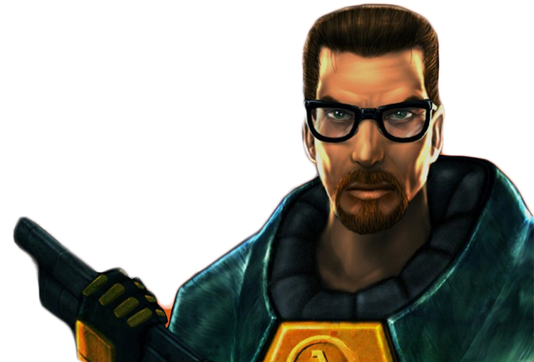
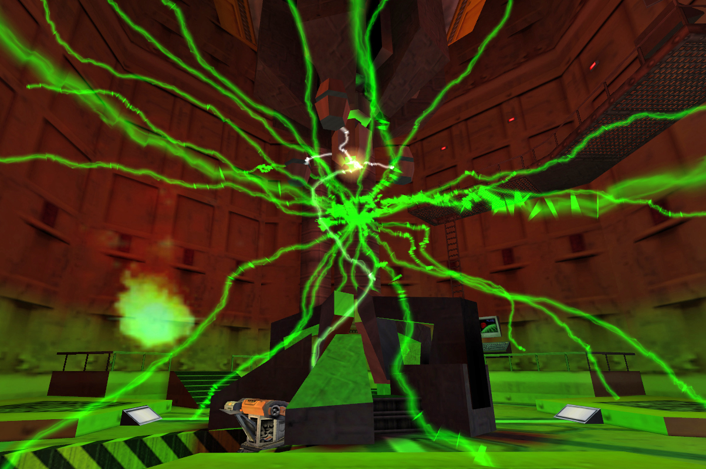

Half-Life
Half-Life (graficky znázorněno jako HλLF-LIFE) je akční počítačová hra ve stylu sci-fi FPS, vyvinutá firmou
Valve
Corporation. První vydání hry společností Sierra Studios v roce 1998 bylo určené pro PC s operačním systémem
Microsoft Windows. Hra byla později vydána také pro herní konzole PlayStation 2 a v lednu 2013 pro operační
systémy Linux a Mac OS X. Herní engine hry pro Windows se nazývá GoldSource a je založen na engine hry Quake od
společnosti id Software, jenž byl ale pro hru Half-Life velmi upravený a navíc používal i části kódu v tu dobu
novějšího engine id Tech 2 pro hru Quake 2.
Hře byly kritiky vytýkány především mnohé skriptované části a celková prezentace. Hra ale získala mnohá ocenění
od
herních kritiků i samotných hráčů a byla mnohými herními časopisy po celém světě vyhlášena jako akční hra roku
či
dokonce nejlepší hra všech dob. Ke dni 16. listopadu 2004 bylo prodáno osm milionů kopií a v prosinci 2008 to
bylo
už 9,3 milionu kopií.


Děj se odehrává někdy mezi lety 1998 až 1999 v pouštích Nového Mexika ve výzkumném komplexu Black Mesa, který se v
mnoha ohledech velmi podobá skutečnému výzkumnému centru Los Alamos a oblasti 51. Hlavní postavou hry je Gordon
Freeman, sedmadvacetiletý teoretický fyzik, absolvent MIT. Freeman je povolán jako experimentátor k pokusu pro
vytvoření teleportu pomocí nalezeného mimozemského krystalu. Tento pokus se ale vymkne kontrole, zničí velkou část
Black Mesa a zabije mnoho lidí. Výsledkem nepovedeného pokusu je tzv. resonanční kaskáda (fiktivní jev) a po celé
Zemi jsou vytvořeny teleporty, kterými se ale nekontrolovatelně přemisťují mimozemské bytosti z dimenze Xen.
Freeman, jako jeden z přeživších, se musí pomocí palných zbraní, energetických zbraní nebo páčidla dostat přes
radiací zamořené komplexy Black Mesa a otevřené vojenské prostory do dimenze Xen a zničit Nihilantha – mozek
mimozemské armády nepřátelských organismů. Ve hře čas od času uvidí tajemného muže v obleku – G-Mana. Ten udělá v
závěru hry Gordonovi zajímavou nabídku.